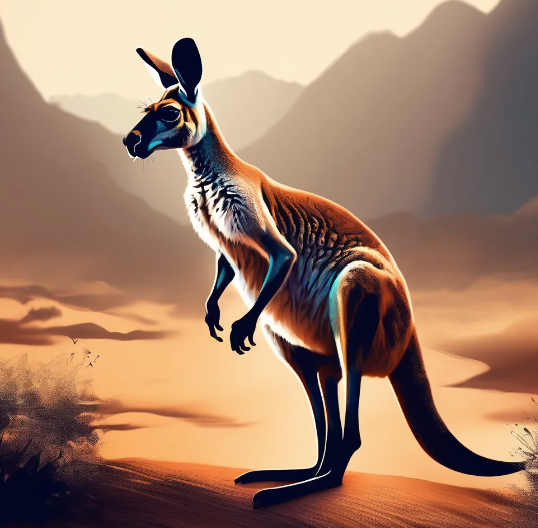

How The Kangaroo Got It's Pouch
Long ago the kangaroo was grooming her joey on the bank of a brook. They liked to listen to the water burble as the mama combed her baby’s fur. On this day, an old wombat staggered toward them. “Oh dear,” the kangaroo whispered to her baby. “This wombat is old and sick. He must have great-great-grandchildren already.” The mother kangaroo thought she heard the sound of weeping. As the wombat veered closer, she heard him say, “Useless and worthless, worthless and useless.” “What’s the trouble, friend wombat?” she asked. “Huh?” he said, startled. “Who said that?” “I did,” said the kangaroo. “A kangaroo and her joey.” “I’m blind,” the wombat replied. “Nobody wants me around. Nobody thinks about me. I’m no good any more. They’ve abandoned me, all of them.” The kangaroo, who had a tender heart, said, “It’s not as bad as all that. I’ll be your friend. My joey and I will show you where the tastiest grass grows.” She let the wombat hold her tail. Then, slowly, she led him over to the juiciest grass and cleanest water. The old wombat sighed with pleasure. It made the kangaroo happy to see him feeling better.
Suddenly she remembered her joey! She had told him to stay close, but he had wandered off again. She raced back to look for him. So many times this had happened. She’d look for food, and when she looked up, he had wandered off. It scared her terribly. She found her joey asleep under a gum tree. Not wanting to wake him from his nap, she decided to go back and check on the old wombat. Something was moving in the bush. An Aboriginal hunter, silently stalking the wombat! Already his boomerang was raised above his head, its smooth edges ready to slice the air. The kangaroo froze. She couldn’t even breathe. She wanted to run, but the wombat was like her joey—she had to protect him! The kangaroo began to stomp on the branches and twigs under her feet. Thump, thump, crack, crack, she pounded the earth. The hunter turned toward her. “Run,” she screamed to the wombat, “Run, there’s a hunter.” The wombat took off crazily, not knowing where he was going. The hunter didn’t care. Now all he wanted was the kangaroo! She hopped as hard and fast as she could into the bush, away, away from where she had left her joey asleep. Her heart thumped wildly in her throat as she ran for her life. At last she came to a cave. She was too tired to go farther, and collapsed on the dirt floor inside. At least he would have to kill her in the cool dark, not out in the open where other animals would be forced to watch. The hunter ran past the mouth of the cave! The kangaroo stayed inside, listening for his return. She was afraid to go out. Finally, she saw him walk past the mouth of the cave again, his boomerang hanging from his hand.
She waited until it was safe, then ran as fast as she could back to the gum tree. There was her joey, awake and ready to play. Together they went to look for the wombat, but he had gone. What the kangaroo mother didn’t know was that the wombat wasn’t a wombat. He was actually the great god Byamee who had put on a disguise. Byamee had descended from the sky world to find out which of his creatures had the kindest heart. Now he had an answer that pleased him greatly: the kangaroo. Byamee wanted to give her the gift that would help her most of all. So he called the sky spirits together and said, “Go down below to where the eucalyptus grow tall. Peel the long strips of bark and make a dilly bag apron. Give it to the kangaroo mother and explain that she must tie it around her waist.” And so they did. At the very moment the kangaroo mother tied the apron around her waist, Byamee transformed it into soft kangaroo fur. It grew into her own flesh. Now she had a pouch in which to carry her baby joey. He could even sleep in there as she went about her daily tasks. The kangaroo mother was very happy with her gift. But because she was the kindest creature of all, she didn’t want to keep it only for herself. She thought about the other kangaroo mothers and about the wallaby mothers and the kangaroo rats and all the other marsupials. Byamee loved the kangaroo’s generous heart. So he decided to make pouches for all the other marsupial mothers. Ever since then, their babies almost never get lost.